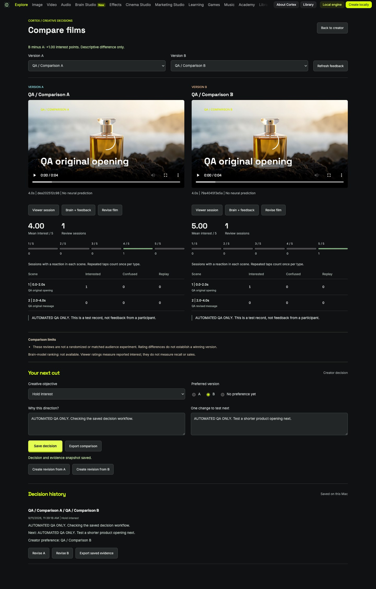

Cortex Studio
A local creative studio for scene composition, narration, image generation, and comparing revisions through viewer feedback.
Inside the build
2 views · select to enlarge


The idea
Bring creative production and the reasoning behind revisions into one workspace.
My approach
Shape a media-first editor with reusable takes, clear provider costs, editable scene structure, and traceable revision decisions.
What exists
The documented private Mac alpha includes an FFmpeg composer, scene editor, image and voice workflows, and a film-comparison library.
Scope & status
Private alpha. Cloud providers require configuration; cloud video and reference editing are not connected. The research display replays published reference data and does not infer brain activity from arbitrary videos. Third-party research and media rights are not cleared for public redistribution.